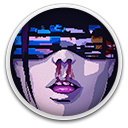
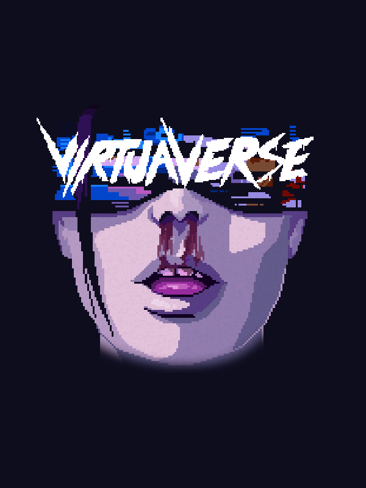

VirtuaVerseDetalhes
 |
|
| Tempo de jogo | Não Jogado |
| Última Atividade | Nunca |
| Adicionado | 07/06/2026 0:35:42 |
| Modificado | 07/06/2026 2:28:43 |
| Status de Conclusão | Not Played |
| Biblioteca | Gog |
| Fonte | GOG |
| Plataforma | PC (Windows) |
| Data de Lançamento | 12/05/2020 |
| Pontuação da Comunidade | 64 |
| Avaliação da crítica | |
| Pontuação do Usuário | |
| Gênero | Adventure Indie Point-and-click Puzzle |
| Desenvolvedor | Theta Division |
| Editor | Blood Music |
| Funções | Single Player |
| Links | Steam Official Website YouTube GOG Wikipedia Discord Twitch Subreddit Playstation Nintendo |
| Tag | |
Descrição

Now with the STORY MODE!
Playing the STORY MODE would be a great option for all those people that don't want to deal with hardcore puzzles. You won't miss much of the story but at the same time most of puzzles will be easier, require less conditions to be unlocked and you will deal with much less inventory objects. Some passages have been cut but the big part of the game is still there. If you are among those who gave up because the game felt too difficult this is also a good opportunity to give it a try again. Also you can still try the old school mode again once you have completed the story mode.
In a future not too far away, one Artificial Intelligence has prevailed over all other AIs and their governments. Society has migrated to a permanently integrated reality connected to a single neural network that continuously optimizes people's experiences by processing personal data.
Nathan, an outsider still refusing to comply with the new system, makes a living off the grid as a smuggler of modded hardware and cracked software. Geared with his custom headset, he is among the few that can still switch AVR off and see reality for what truly is.
He shares an apartment in the city with his girlfriend Jay, a talented AVR graffiti writer whose drones have been bit-spraying techno-color all over the augmented space in the city.
Waking up one morning, Nathan discovers that Jay disappeared overnight, but not before leaving a cryptic message on their bathroom mirror.
Having accidentally broken his custom headset, Nathan is now disconnected and determined to find out what happened to Jay, but he soon finds himself tangled up in an unexpected journey involving Jay's hacker group and a guild of AVR technomancers.
Travelling around the world, he'll have to deal with hardware graveyards, digital archeology, tribes of cryptoshamans, and virtual reality debauchery.